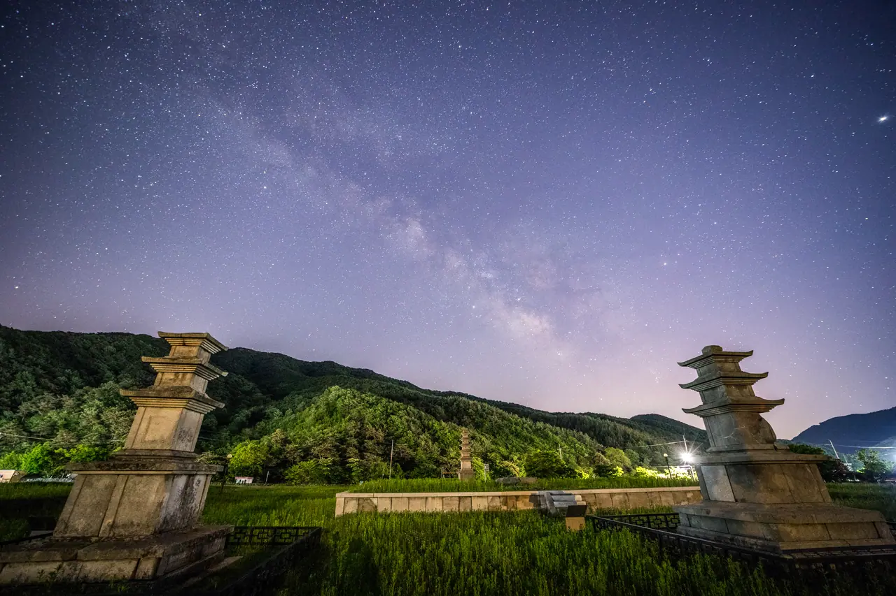
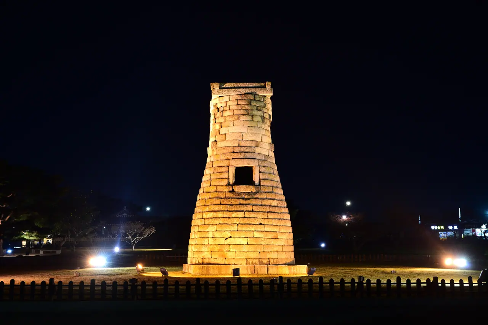
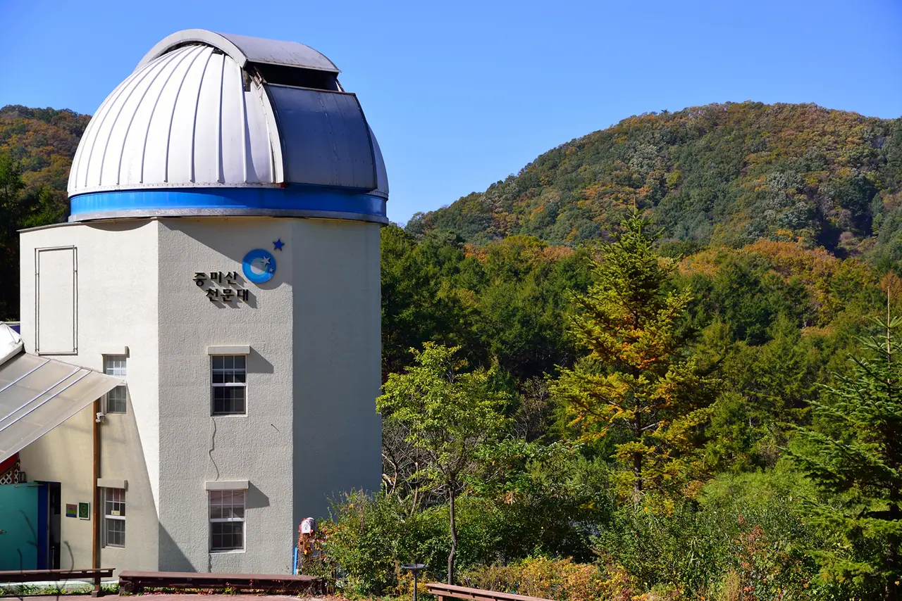
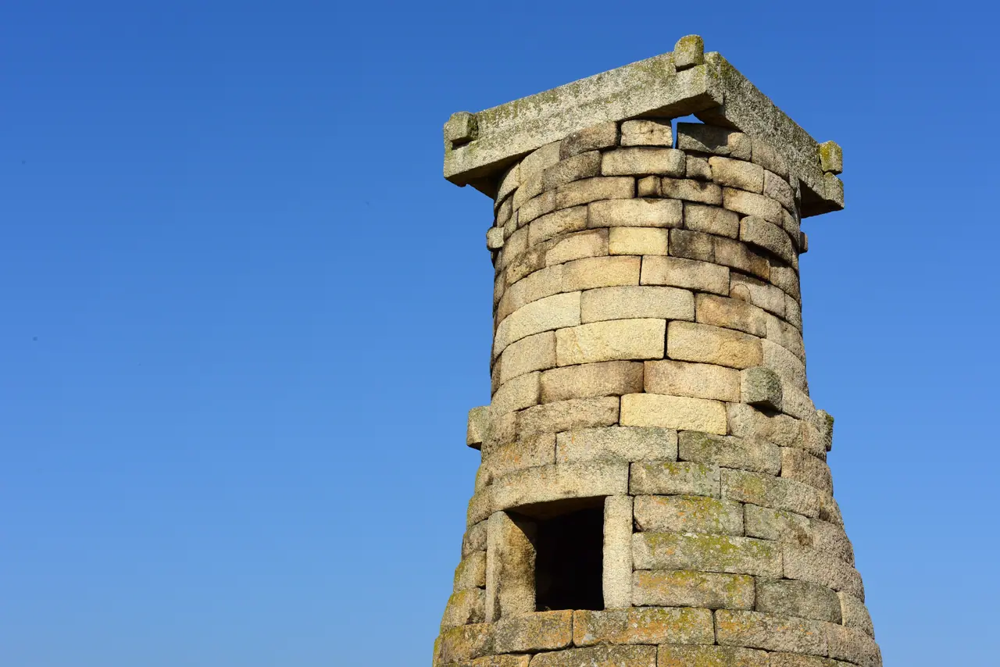

▲ 서산 보원사지 위의 은하수. 도심에서는 볼 수 없는 밝기다 ⓒ 충청남도 (공공누리 제1유형)
대부분의 여행은 어디에 갈지가 먼저입니다.
별을 보러 가는 여행은 반대입니다. 조건이 먼저 정해지고, 그 조건을 만족하는 곳이 목적지가 됩니다. 어두울 것, 맑을 것, 달이 없을 것.
1. 왜 도시에서는 안 보이나
별이 사라진 것이 아닙니다. 하늘이 밝아진 것입니다.
가로등, 간판, 건물 조명이 대기 중의 먼지와 수증기에 반사되면 하늘 전체가 옅게 빛납니다. 이것을 광공해라고 부릅니다. 배경이 밝아지면 어두운 별은 묻혀버립니다.
📍 밝기 차이가 만드는 결과
도심에서는 가장 밝은 별 수십 개 정도만 보입니다. 북두칠성이나 오리온자리처럼 밝은 별로 이뤄진 것들입니다.
광공해가 적은 곳에서는 수천 개가 보이고, 은하수가 띠 모양으로 드러납니다. 같은 하늘인데 보이는 양이 다릅니다.

▲ 보령 성주사지. 주변 조명이 적으면 은하수가 띠로 드러난다 ⓒ 충청남도 (공공누리 제1유형)
📍 별을 보던 자리는 원래 있었습니다
경주 첨성대는 신라 선덕여왕 때 세워진 것으로 전해지며, 현존하는 동양에서 가장 오래된 천문대로 꼽힙니다. 국보입니다.
지금은 주변이 밝아 그 자리에서 별을 보기는 어렵습니다. 천문대가 사라진 것이 아니라 하늘이 밝아진 셈입니다.

▲ 경주 첨성대의 밤. 지금은 조명이 켜진 유적이지만, 원래는 하늘을 보던 자리였다 ⓒ 국가유산청 (공공누리 제1유형)
2. 국내에서 인증받은 유일한 곳
경북 영양의 국제밤하늘보호공원은 2015년 국제밤하늘협회(IDA)로부터 아시아 최초로 지정받았습니다.
| 항목 | 내용 |
|---|---|
| 지정 | 2015년 — 국제밤하늘협회(IDA), 아시아 최초 |
| 등급 | 실버 티어(Silver Tier) |
| 위치 | 경북 영양군 수비면 일대 |
| 면적 | 390만㎡ |
| 중심 시설 | 영양반딧불이천문대 |
📍 실버 티어가 무엇인가
IDA의 밤하늘보호공원 등급은 밤하늘의 어두움과 인공조명 관리 수준을 함께 평가합니다.
실버 티어는 인공조명으로 인한 생태 교란을 최소화하면서 수준 높은 밤하늘을 제공한다는 뜻입니다. 단순히 어둡기만 한 것이 아니라 지역이 조명을 관리하고 있다는 인증입니다.
공원 중심의 영양반딧불이천문대는 여름에는 자연 상태의 반딧불이를, 밤에는 별과 은하수를 함께 볼 수 있는 국내 유일의 시설로 소개됩니다.

▲ 천문대는 대개 산 위에 있다. 밤에 오르는 길을 미리 봐두는 것이 좋다 ⓒ 한국관광공사 (공공누리 제1유형)
| 지역 | 시설 | 성격 |
|---|---|---|
| 경북 영양 | 영양반딧불이천문대 | 국제밤하늘보호공원 중심 — 가장 어둡다 |
| 경기 양평 | 중미산천문대 | 수도권에서 접근이 쉽다 |
| 경남 김해 | 김해천문대 | 산 위 — 도심 조망과 함께 |
천문대는 어두운 곳을 고르는 한 가지 방법일 뿐입니다. 시설이 없어도 주변에 인공조명이 없는 곳이면 조건은 같습니다. 다만 천문대는 주차장과 화장실이 있고 진입로가 정비돼 있다는 실질적인 이점이 있습니다.
3. 가을 밤하늘은 어떤가
은하수의 가장 밝은 부분인 중심부는 늦봄에서 여름 사이에 잘 보입니다. 가을로 접어들면 초저녁 남서쪽 낮은 하늘로 기울어 관측 시간이 짧아집니다.
대신 얻는 것이 있습니다. 가을은 습도가 낮아져 대기 투명도가 좋아집니다. 여름의 눅눅한 대기보다 별이 또렷하게 보입니다.
| 계절 | 장점 | 단점 |
|---|---|---|
| 여름 | 은하수 중심부가 높이 뜬다 | 습도 높음 · 구름 · 모기 |
| 가을 | 투명도 좋음 · 기온 견딜 만함 | 은하수 중심부는 낮게 기운다 |
| 겨울 | 가장 투명 · 밝은 별 많음 | 혹한 · 산간도로 결빙 |
✅ 가을 밤에 보기 좋은 것
· 안드로메다은하 — 맑은 날 맨눈으로도 뿌옇게 보인다
· 페르세우스·카시오페이아 방향의 은하수 — 여름만큼 밝지는 않다
· 오리온자리 유성우 — 10월 21일경 극대
· 초저녁 서쪽으로 기우는 여름철 은하수의 끝자락
4. 10월에는 유성우가 있습니다
가을 밤하늘의 이벤트는 오리온자리 유성우입니다. 매년 10월 21일경 극대에 이릅니다.
| 항목 | 내용 |
|---|---|
| 극대 | 10월 21일경 — 그 전후 며칠도 볼 수 있다 |
| 관측 수 | 좋은 조건에서 시간당 20개 정도 |
| 모혜성 | 핼리혜성 — 주기 76년 |
| 좋은 시간 | 자정 이후 ~ 새벽 — 오리온자리가 높이 뜬 뒤 |
📍 핼리혜성이 남긴 부스러기입니다
오리온자리 유성우는 핼리혜성이 궤도에 흩뿌린 먼지 알갱이들이 지구 대기와 부딪히며 타는 현상입니다.
핼리혜성 자체는 76년에 한 번 돌아오지만, 그 부스러기는 궤도에 남아 있어 매년 같은 시기에 같은 자리를 지나갑니다.
✅ 유성우를 보는 요령
· 망원경은 필요 없습니다 — 시야가 좁아져 오히려 불리하다
· 오리온자리를 정면으로 보지 않는다 — 유성은 하늘 전체에 나타난다
· 누워서 하늘을 넓게 보는 자세가 가장 유리하다
· 시간당 20개는 3분에 한 개꼴이다. 기다릴 각오를 하고 간다

▲ 양평 중미산천문대. 수도권에서 접근할 수 있는 관측 시설이다 ⓒ 경기도 (공공누리 제1유형)
5. 달이 가장 큰 변수입니다
장소를 아무리 잘 골라도 달이 밝으면 소용없습니다. 보름달은 그 자체로 강력한 광원입니다.
✅ 날짜를 고를 때
· 그믐 전후가 가장 어둡다 — 음력 말일~초순
· 보름 전후에는 은하수가 거의 보이지 않는다
· 달이 뜨기 전이나 진 뒤를 노리는 방법도 있다
· 구름은 예보로 확인 — 맑음이 아니라 구름 양을 본다

▲ 고성 소을비포성지. 조명이 있는 곳에서는 밝은 별만 남는다 ⓒ 경상남도 고성군 (공공누리 제1유형)
6. 밤 산간도로가 진짜 변수입니다
별이 잘 보이는 곳은 곧 사람이 적고 조명이 없는 곳입니다. 그 말은 가는 길도 어둡다는 뜻입니다.
✅ 밤 산간도로에서 주의할 것
· 야생동물 — 고라니는 불빛을 보면 멈춰 선다. 상향등을 계속 켜지 않는다
· 급커브가 예고 없이 나온다 — 낮보다 속도를 더 줄인다
· 노면 결빙 — 늦가을부터 산간은 새벽에 살얼음이 생긴다
· 낙석·낙엽 — 젖은 낙엽은 미끄럽다
· 통신 음영 구간이 있다 — 내비 경로를 미리 저장해 둔다
· 주유는 산에 오르기 전에 — 심야 산간에는 주유소가 없다
📍 돌아오는 길이 더 위험합니다
별을 보고 내려오는 시각은 대개 자정 이후입니다. 긴장이 풀리고 체온이 떨어진 상태라 졸음이 오기 쉽습니다.
가능하면 인근에 숙소를 잡고 아침에 이동하는 편이 낫습니다. 그것이 어렵다면 내려오는 길에 반드시 한 번은 쉬어야 합니다.
7. 챙겨야 할 것
별 보기는 장비보다 준비 상태가 결과를 가릅니다.
✅ 준비물과 요령
· 붉은빛 조명 — 흰빛은 눈의 암순응을 즉시 깨뜨린다
· 암순응에 20~30분이 걸린다. 도착하자마자 보이지 않는 것이 정상이다
· 차량 실내등과 계기판 밝기를 최대한 낮춘다
· 방한 — 산간의 밤 기온은 낮보다 10도 이상 낮다
· 돗자리나 접이식 의자 — 목을 젖히고 오래 보기 어렵다
· 주차는 다른 차의 헤드라이트가 닿지 않는 위치로

▲ 낮의 첨성대. 1,400년 전 이 자리는 별을 보기에 가장 좋은 조건이었다 ⓒ 국가유산청 (공공누리 제1유형)
8. 지켜야 할 것
밤하늘보호공원은 지역이 조명을 줄여 만든 환경입니다. 방문객의 불빛 하나가 그 노력을 무너뜨릴 수 있습니다.
✅ 현장 예절
· 헤드라이트를 켠 채로 주차장에 오래 서 있지 않는다
· 플래시 촬영을 하지 않는다
· 휴대폰 화면 밝기를 낮추거나 야간 모드를 쓴다
· 사유지·농지에 함부로 들어가지 않는다
· 쓰레기는 전부 되가져온다 — 관리 인력이 상주하지 않는 곳이 많다
정리
별을 보려면 어두운 곳, 맑은 날, 달 없는 밤이라는 세 조건이 먼저입니다. 목적지는 그다음에 정해집니다.
국내에서 가장 확실한 곳은 경북 영양국제밤하늘보호공원입니다. 2015년 IDA로부터 아시아 최초로 지정받았고 등급은 실버 티어, 수비면 일대 390만㎡ 규모입니다. 중심의 영양반딧불이천문대는 반딧불이와 별을 함께 볼 수 있는 국내 유일 시설로 소개됩니다.
가을은 은하수 중심부 시즌이 끝나가지만 대기 투명도가 좋아지고, 10월 21일경에는 핼리혜성이 남긴 오리온자리 유성우가 극대에 이릅니다. 다만 별이 잘 보이는 곳은 가는 길도 어둡습니다. 야생동물, 급커브, 늦가을 노면 결빙, 그리고 자정 이후 돌아오는 길의 졸음이 실제 위험입니다.